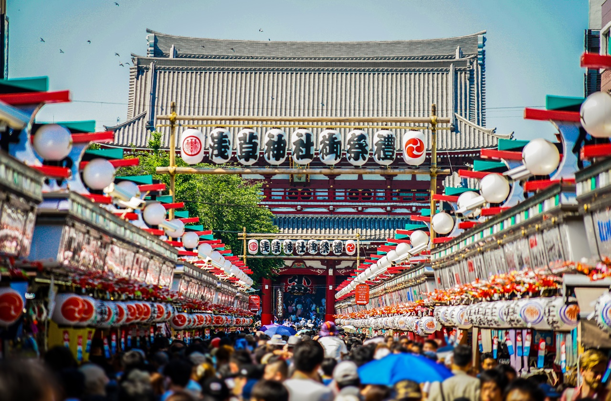

Những hoạt động lễ hội đặc sắc
Sendai Tanabata Matsuri (từ ngày 6-8 tháng Tám, Sendai)
Trong khoảng thời gian này, mọi người sẽ viết những điều ước của mình lên những dải giấy "tanzaku" hình chữ nhật rồi treo chúng lên những chiếc lá tre để gửi lời cầu nguyện tới các vì sao. Trong dịp lễ hội, các con phố, trung tâm mua sắm, tại các ngôi nhà trên phố và các cửa hàng đều được trang hoàng với các dải giấy màu sặc sỡ và những chiếc lá tre được kết hợp cùng với nhau góp phần tạo nên bầu không khí sống động.
Lễ hội tuyết Sapporo (cuối tháng Một, đầu tháng Hai, Sapporo)
Với mục đích biến cái rét buốt của mùa đông Hokkaido trở nên tươi vui, ở lễ hội tuyết Sapporo có hàng trăm những sản phẩm điêu khắc bằng băng và tuyết với kích cỡ lớn, được chế tác một cách vô cùng tỉ mỉ tô điểm toàn bộ thành phố Sapporo. Địa điểm chính tổ chức lễ hội là công viên trung tâm Odori, nhưng các vùng lân cận như Susukino và Tsu Dome ở quận khu Higashi cũng có rất nhiều những hoạt động vô cùng thú vị.
Lễ hội đèn lồng Nagasaki (cuối tháng Một, đầu tháng Hai, Nagasaki)
Bắt nguồn từ một lễ hội đón tết âm lịch nhỏ, lễ hội đèn lồng Nagasaki ngày nay đem đến một khung cảnh trong mơ với hơn 15,000 chiếc đèn lồng khiến thành phố ngập trong màu đỏ cam và vàng rực rỡ. Lễ hội diễn ra vào dịp tết âm lịch và thu hút hơn 1 triệu du khách tới khu phố người Hoa ở Nagasaki và các vùng lân cận để ngắm nhìn những chiếc đèn lồng cùng những màn trình diễn pháo hoa, các vũ điệu truyền thống, các màn trình diễn và nhiều hoạt động thú vị khác.